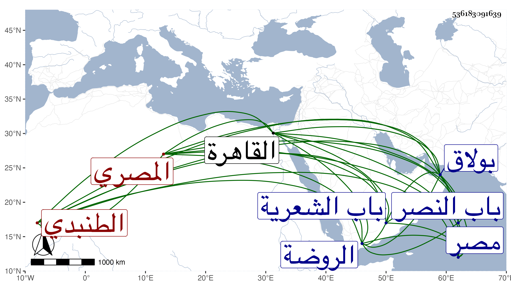

0902Sakhawi.DawLamic.ITO20230111-ara1.EIS1600.536183091639
Biography ID: 536183091639
79
علي بن محمد النور بن الجلال الطنبدي المصري . قال شيخنا في إنبائه : انتهت إليه رياسة التجار بالديار المصرية وكان مع كثرة حجه وحسن معاملته بحيث شاهدته غير مرة يقرض المحتاج بغير ربح وبره لجماعة ومروءة في الجملة كثير الإسراف على نفسه . مات في ليلة الجمعة رابع عشر صفر سنة ست وثلاثين وقد جاز السبعين . قلت وهو صاحب القاعة المطلة على البحر بالقرابيص داخل درب السنبكية ... المعروفة بالطنبذية والتربة التي بالصحراء بالقرب من الروضة من باب النصر والقيسارية مع الربع بالقرب من جامع الواسطي من بولاق وكذا بالقرب من ميدان الغلة خارج باب القنطرة والحمامين داخل باب الشعرية وغير ذلك وقال بعض المؤرخين إنه استوطن القاهرة قبل موته بسنين وكف عن التجارة إلا اليسير وأنه كان على عادة التجار مسيكا حريصا وخلف عدة أولاد ليسوا بذاك افتقر غالبهم بعد مدة يسير عفا الله عنه .
